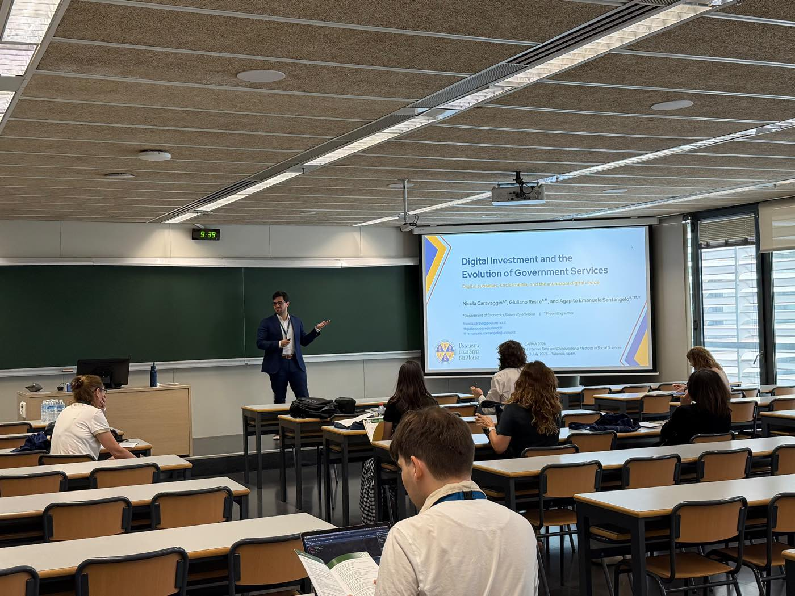
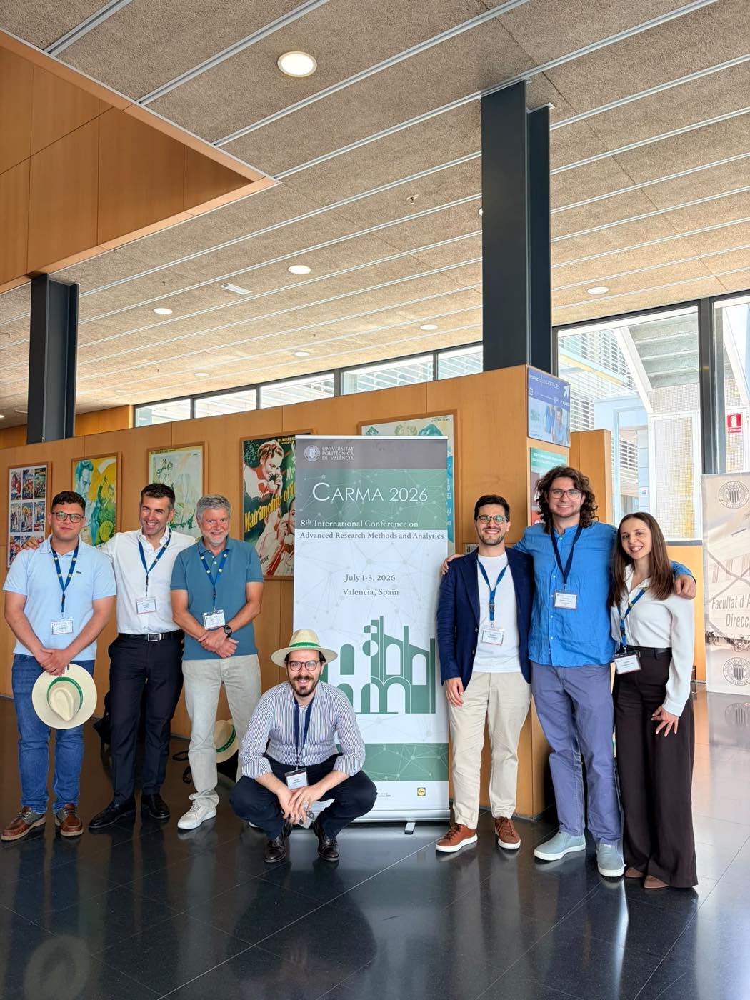
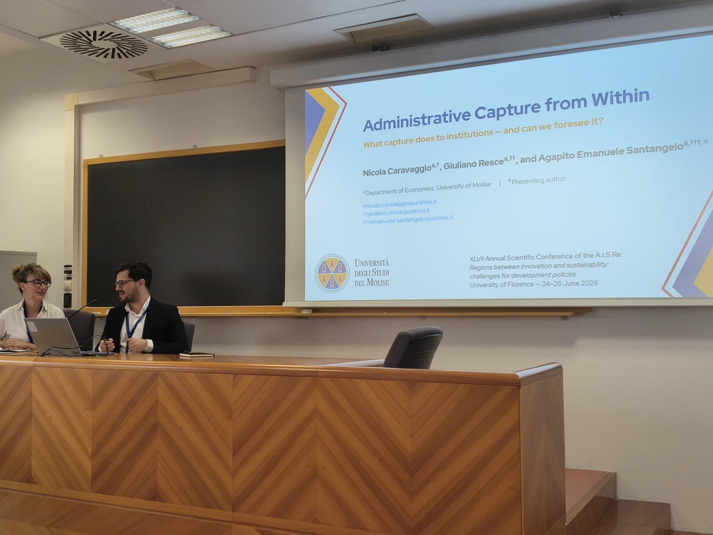
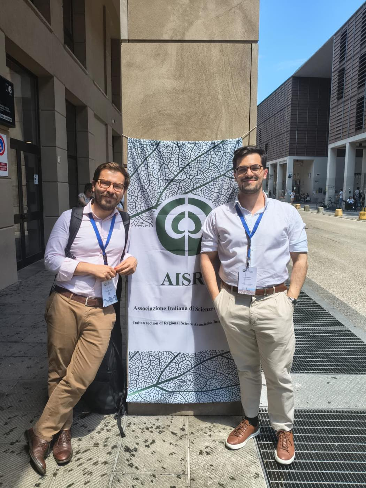
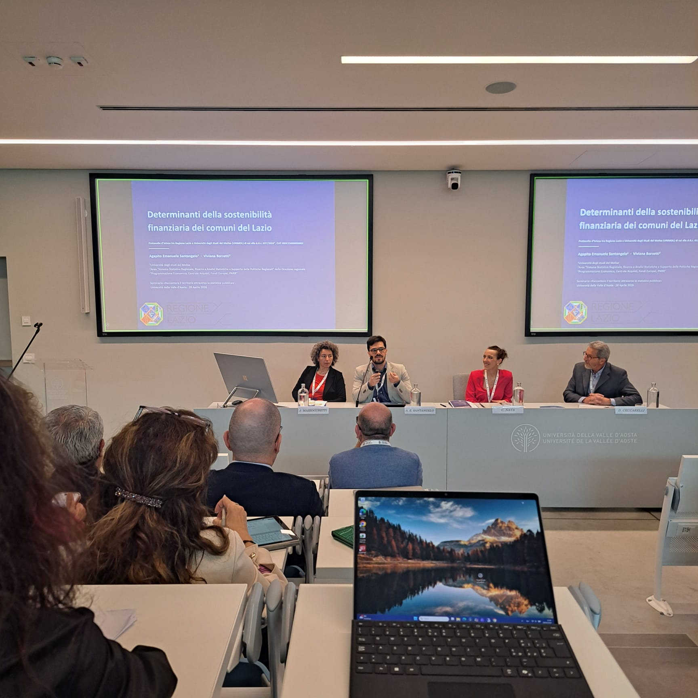
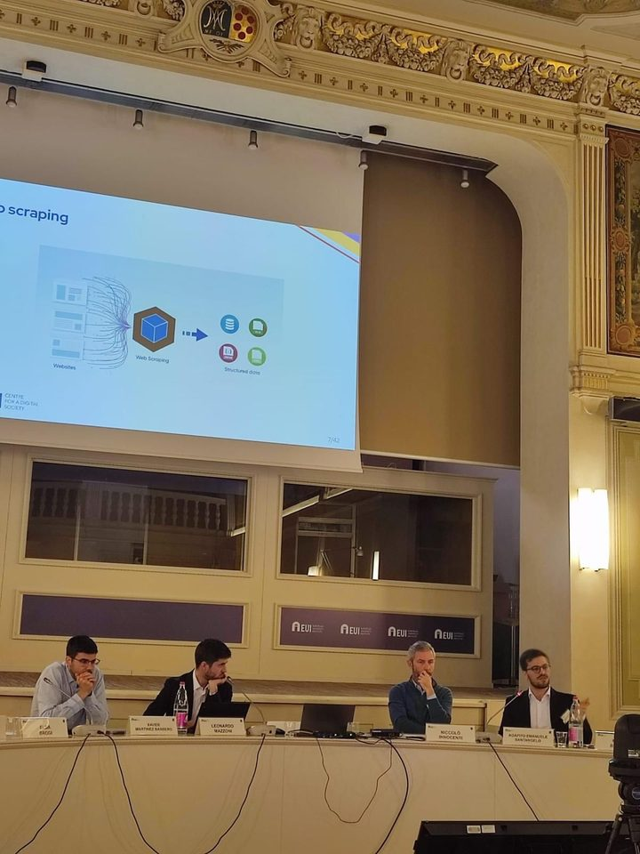
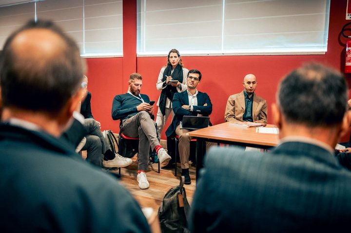

Talks & Conferences
2026
- Presenter
Digital Investment and the Evolution of Government Services
CARMA 2026 — 8th International Conference on Advanced Research Methods and Analytics · Universitat Politècnica de València · 1–3 July 2026.
Paper on digital investment, subsidies and the municipal digital divide (with N. Caravaggio and G. Resce), presented under the theme AI, Internet Data and Computational Methods in Social Sciences. Conference site →
Presenting Digital Investment and the Evolution of Government Services — CARMA 2026, Universitat Politècnica de València, 2 July 2026. 
The research group at the CARMA 2026 banner — Universitat Politècnica de València, 1–3 July 2026. - Presenter
Administrative Capture from Within
AISRe 2026 — XLVII Annual Scientific Conference of the Italian Regional Science Association · University of Florence, Novoli Campus · 24–26 June 2026.
Paper on administrative capture and institutional quality (with N. Caravaggio and G. Resce), presented under the theme Regions between innovation and sustainability: challenges for development policies. Programme →
Presenting Administrative Capture from Within — XLVII AISRe Conference, University of Florence, 26 June 2026. 
At the Italian Regional Science Association banner — Novoli Campus, University of Florence, June 2026. - Presenter
Determinanti della sostenibilità finanziaria dei comuni del Lazio
University of Valle d'Aosta · Polo Universitario, Via Monte Vodice · 28 April 2026.
Paper presented at the seminar «Raccontare il territorio attraverso la statistica pubblica: ruolo e offerta di Regioni e Istat» (Aosta, 27–28 April 2026), promoted by the Italian Inter-Regional Statistical Coordination (CSI) and Istat. Joint work with Viviana Borzetti (Regional Statistics Office — Lazio Region), under the cooperation agreement between Lazio Region and the University of Molise.
Opening of the seminar Raccontare il territorio attraverso la statistica pubblica, University of Valle d'Aosta, 28 April 2026. 
Presenting the paper on the determinants of financial sustainability of Lazio municipalities — University of Valle d'Aosta, 28 April 2026. - Presenter
Le transizioni nei sistemi territoriali
University of Foggia — Department of Economics · Aula Magna “V. Spada” · 20–21 February 2026.
Two-day conference on environmental and digital transitions, the Apulian economy, and the inner-areas / urban divide. Day 2 is held in English with a more technical focus. Programme →
Talk on digital indicators of territorial dynamics — Le transizioni nei sistemi territoriali, University of Foggia, 20–21 February 2026.
2025
- Presenter
Understanding and Addressing Digital Inequalities
Annual Scientific Conference on Digital Democracy — Centre for a Digital Society, Robert Schuman Centre, European University Institute (EUI) · Florence, 20–21 November 2025

Panel at the EUI Centre for a Digital Society annual conference on Digital Democracy — presenting web-scraping methodology for measuring digital inequalities (Florence, November 2025). - Presenter SIE 2025 — 66th Annual Scientific Meeting Italian Economic Association (Società Italiana di Economia) · Università di Napoli Parthenope, 23–25 October 2025
- Discussant
Panel discussion
October 2025.

Conference panel discussion, October 2025. - Presenter AISRe 2025 — XLVI Annual Scientific Conference Italian Regional Science Association (RSAI Italian Section) · Università “G. d'Annunzio” Chieti-Pescara, 10–12 September 2025
- Organizer & Presenter CARMA 2025 — 7th International Conference on Advanced Research Methods and Analytics Rome, 2–4 July 2025. Two papers presented; co-organiser and session chair.
2024
- Organizer & Presenter CARMA 2024 — 6th International Conference on Advanced Research Methods and Analytics Universitat Politècnica de València, 26–28 June 2024. Three papers presented; co-organiser.
- Organizer HEAd'24 — 10th International Conference on Higher Education Advances Universitat Politècnica de València, June 2024.
- Presenter SoFIA 2024 — 2nd Workshop on Social Health Frailty as Determinants of Inequality in Ageing University of Molise.